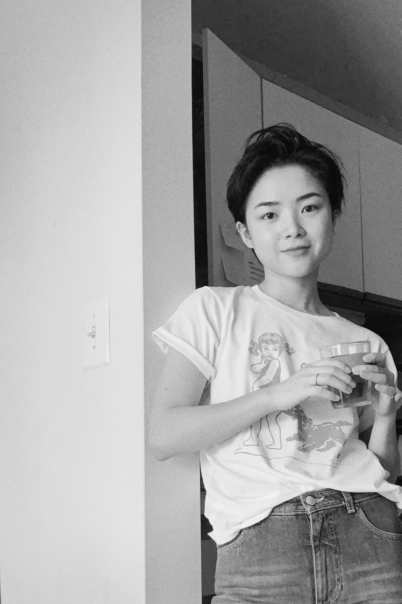

To me, design is like a purposeful adventure, without maps. Constantly observing, thinking and communicating to harness this randomness. I value the consecutiveness between research and design, and love to explore and think about the influence and development of design and social relations. I am currently studying for the master degree in social work and information at the University of Michigan, and assisting in the production of While We Were Away podcast at Prison Creative Art Project as a social work intern. If you have any projects in mind or if you have any questions don't hesitate to reach out and contact me at jessiezhozuzexi@gmail.com!